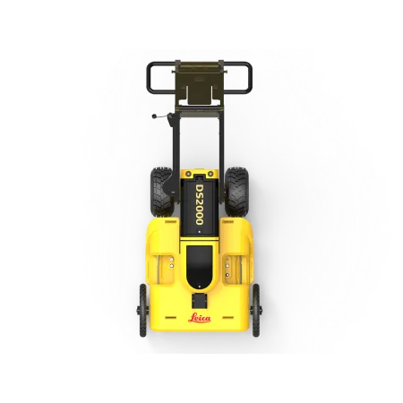
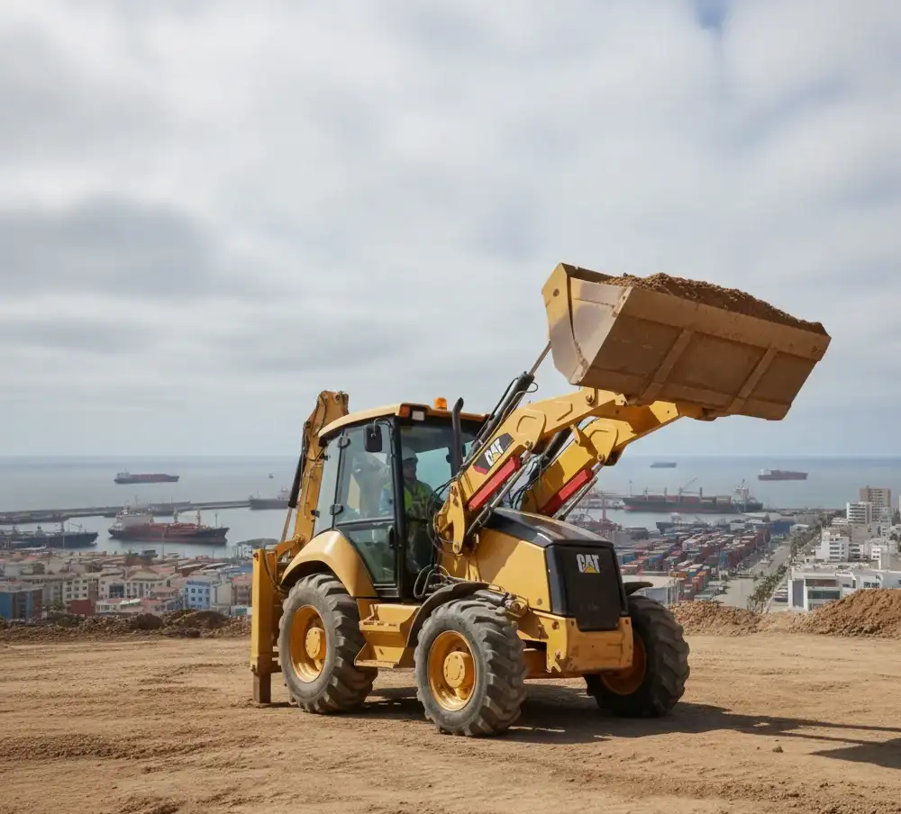
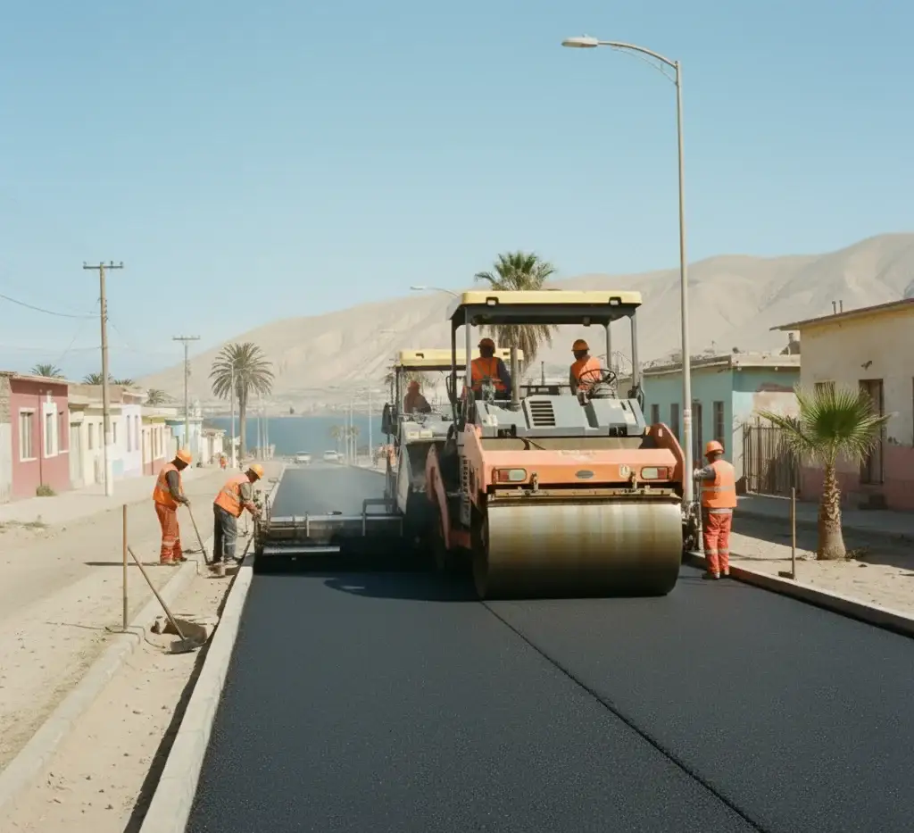
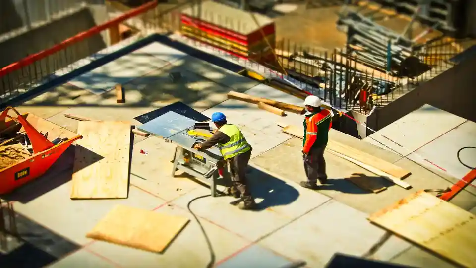

¿Enfrentando obstáculos con el suelo? Convertimos tus desafíos en oportunidades.
Obtén una cotización rápida para servicios de GPR en La Serena.
📧 Escríbenos: [email protected]
☎️ Teléfono: +56 57 226 0344
La mecánica de suelos juega un papel crucial en asegurar la seguridad, estabilidad y protección de las estructuras en La Serena. Ya sea que planees construir una estructura residencial, comercial o industrial, la mecánica de suelos proporciona la experticia necesaria para evaluar las condiciones del suelo y diseñar cimentaciones apropiadas. Al comprender la geología única de La Serena, nuestros ingenieros en mecánica de suelos pueden mitigar riesgos potenciales y asegurar la estabilidad a largo plazo de tu proyecto.

GPR, resistividad eléctrica, térmica y tomografía para estudios del subsuelo.

Arriendo de retroexcavadoras, perforadoras, rodillos y equipos especializados.

Proyectos de pavimentación asfáltica y estudios geotécnicos para vías.

Análisis y diseño de estructuras con estudios de mecánica de suelos.
Nuestra empresa de mecánica de suelos en La Serena ofrece una gama completa de servicios para satisfacer los requisitos específicos de su proyecto. Nuestro equipo de consultores e ingenieros experimentados en mecánica de suelos está equipado con el conocimiento y la experiencia para manejar cualquier desafío geotécnico. Desde investigaciones de sitio y pruebas de suelo hasta análisis de estabilidad de taludes y diseño de cimentaciones, proporcionamos soluciones a medida que aseguran una entrega de proyecto eficiente y rentable.
Nuestros ingenieros en mecánica de suelos realizan investigaciones de sitio exhaustivas para evaluar las condiciones del suelo y la roca en su sitio de proyecto. Utilizamos técnicas y equipos avanzados para recolectar muestras de suelo, analizar sus propiedades y evaluar cualquier peligro potencial. Al comprender la composición del suelo y las condiciones del terreno, podemos proporcionar recomendaciones precisas para el diseño de cimentaciones y la planificación de la construcción.
Nuestros servicios de pruebas geotécnicas incluyen el análisis de laboratorio de muestras de suelo, lo que nos permite determinar su resistencia, permeabilidad y otras propiedades relevantes. Estos datos son esenciales para diseñar cimentaciones que puedan soportar las cargas y condiciones ambientales específicas de su proyecto. Utilizamos métodos de prueba avanzados para proporcionar resultados precisos y fiables.
Nuestros ingenieros en mecánica de suelos evalúan la estabilidad de taludes y terraplenes para garantizar la seguridad de su proyecto. A través del análisis detallado y la modelización, podemos identificar posibles fallas y recomendar medidas de estabilización adecuadas. Al abordar los problemas de estabilidad de taludes desde el principio, mitigamos el riesgo de colapsos o deslizamientos, asegurando la estabilidad a largo plazo de sus estructuras.
Nuestros ingenieros en mecánica de suelos aprovechan su experiencia para diseñar cimentaciones seguras y eficientes para diversos tipos de estructuras. Ya sea que requiera cimentaciones superficiales o profundas, nuestro equipo determinará el diseño más adecuado basado en las condiciones del sitio, las cargas impuestas a la estructura y otros factores relevantes. Nuestra experiencia en mecánica del suelo y ingeniería de cimentaciones asegura la estabilidad e integridad de su proyecto.

El costo de un estudio de mecánica de suelos puede variar entre 4 millones y 8,5 millones de pesos, dependiendo del alcance del proyecto, la ubicación, la profundidad, el tipo de muestreo y más. Contacta a profesionales locales de mecánica de suelos para obtener una estimación exacta.
Un día típico para un ingeniero en mecánica de suelos implica realizar investigaciones en sitio, pruebas de suelo y roca, análisis de datos y preparación de informes. También pueden realizar análisis de estabilidad de taludes, diseño de cimentaciones y monitoreo de instrumentación geotécnica. Además, colaboran con otros profesionales, como ingenieros estructurales y ambientales, y pueden supervisar proyectos de construcción para asegurar que se consideren los aspectos geotécnicos. Las visitas al sitio para inspecciones y consultas con clientes o contratistas también son comunes. En general, el día de un ingeniero en mecánica de suelos es dinámico, involucrando una combinación de trabajo de campo, análisis de laboratorio y tareas basadas en la oficina

Cuando necesites servicios confiables de mecánica de suelos en La Serena, confía en nuestro equipo experimentado para obtener resultados excepcionales. Contáctanos hoy para discutir los requisitos de tu proyecto y permítenos ayudarte a lograr estabilidad, seguridad y éxito.